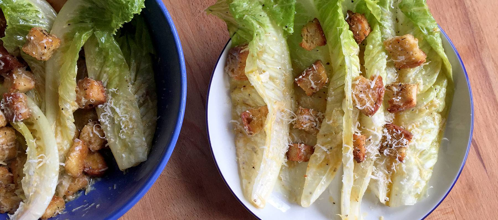

Cocinando...
El blog de los amantes de la gastronomía.
Favoritos


Ensalada Cesar
Una ensalada César es una ensalada de lechuga romana y croûtons (trozos de pan tostado) con jugo de limón, aceite de oliva, huevo, salsa Worcestershire, anchoas, ajo, mostaza de Dijon, queso parmesano y pimienta negra. La ensalada César original no contiene pollo, aunque se le suele agregar habitualmente. El inventor de esta ensalada fue el chef del restaurante Cardini, Remigio Murgia, aunque el platillo se nombró ensalada Cesar en honor al dueño y también cocinero César Cardini. Esta ensalada es muy popular y ha llegado a internacionalizarse, siendo posible encontrarla en variados restaurantes del mundo. En su forma original, esta ensalada era preparada al momento delante del comensal y servida a un lado de la mesa.
Tacos al pastor
Sus ingredientes principales son pequeñas tortilla de maíz con carne adobada,
la cual puede ser una combinación de carne de cerdo y carne de ternera, o solo
carne de puerco. Además, la carne es preparada con un marinado tradicional.
Este marinado está hecho con ingredientes como el achiote, especias y chiles
rojos molidos, que le dan un color rojizo muy característico a la carne, y son
acompañados con una variedad de salsas, cilantro, cebolla y piña. La popularidad
de este platillo es tal, que resulta del agrado de personas de todas las clases
sociales. Por lo mismo, es fácil encontrarlos en lugares que van desde restaurantes
gourmet hasta puestos en la vía pública. En algunos puestos de la Ciudad de Mexico,
se puede encontrar una preparación a base de Coca-Cola, añadiendole un toque mas dulce
de lo costumbre.